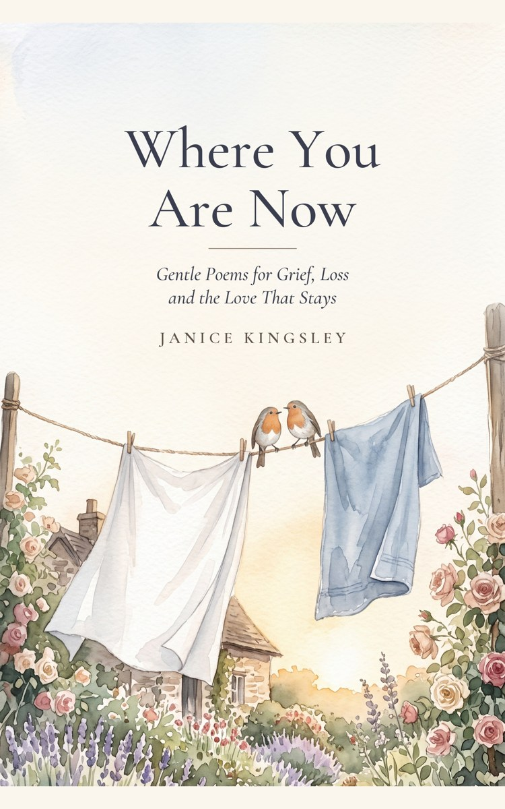

For anyone who still makes two cups.
Printed and shipped by Amazon. Scroll down to look inside first.
6 real pages from the printed book. Tap any page to see it full size.
Where You Are Now is a collection of gentle, honest poems for the long road of grief. The phone call that splits life into before and after. The quiet months when everyone else has gone home. The coat still on the hook, the voicemail you are frightened of wearing out, the first laugh that feels like a betrayal. And the slow, surprising discovery that the people we love never really leave.
Ninety-five short poems in five chapters:
The First Days, The Quiet, Things You Left Behind, Learning to Laugh, Where You Are Now
Written in plain, tender language, with soft watercolour illustrations throughout, this is a book to read slowly, a page at a time, on the long nights and the early mornings. There is no right way to grieve, and no right way to read it: start at the beginning, or open it anywhere.
A thoughtful sympathy gift for someone who has lost a mother, father, husband, wife, grandparent or friend, and cannot find the words. At the back of the book you will find a page of bereavement helplines for the UK, Ireland and the USA.
Grief is not the absence of you. It is the habit of you.